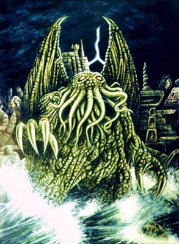
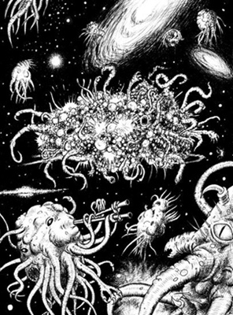
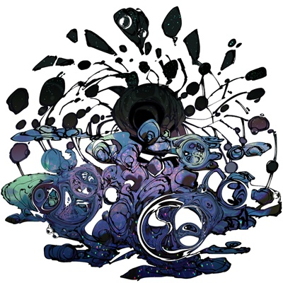
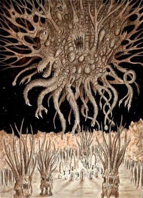
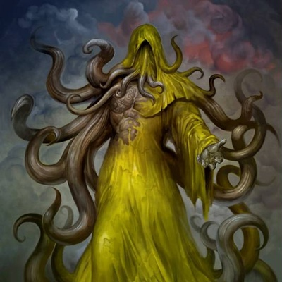
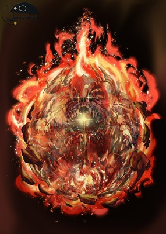

よく見る神格一覧
クトゥルフ

クトゥルフ神話といえばの代表的存在。大いなるクトゥルフと呼ばれることもある。 旧支配者 海底に沈んだ都市ルルイエに眠っている(あるいは封印されている)とされているが、目覚めかけた際に漏れ出る夢がテレパシーとして人間に悪影響を与えたり配下が危害を加えてきたりする。 一般に頭足類に似た六眼の頭部、顎髭のように触腕を無数に生やし、巨大な鉤爪のある手足、水かきを備えた二足歩行の姿、ぬらぬらした鱗かゴム状の瘤に覆われた数百メートルもある山のように大きな緑色の身体、 背にはドラゴンのようなコウモリに似た細い翼を持った姿をしているとされる。 クトゥルフ神話において旧支配者の一柱で四大霊の水の精の首領であり、風の精の首領ハスターと対立している。
アザトース

アザトース別名盲目白痴の王 公式ではないが一番有名な設定としてこの世界はすべてアザトースが見ている夢の中であるといわれている。 我々のいる宇宙は、アザトースの思考が物質化される空間で、この世の全ての現象や物事は全てアザトースを起源とし、全ての「存在」は彼の思考によって創造される。だが、思考と言ってもアザトースには知性がない。 ゆえに宇宙はこうあるべきなどという目的意識は全く持っておらず、生まれたばかりの赤子に宇宙を作る力が与えられたようなものである。なので、この宇宙は混沌で出鱈目だというのが真実であり、科学や論理で宇宙は解明できるなんていうのは人間の単なる勘違いである。 この事からこの世はアザトースの見ている夢であるともされ、つまりアザトースが眠りからさめたとき、この世は一瞬にして消滅するのである。
ニャルラトホテプ ナイアルラトホテップ
クトゥルフ神話TRPGなどでは基本ニャルラトホテプという名前で登場しPLの間ではにゃる様等と呼ばれ親しまれている 神話体系における立場としては外なる神の一柱でアザトースに仕える存在である。「千の顕現」を持つとされ、人間や怪異などさまざまな姿に変じる。特定の眷属を有せず、しばしば魔術・秘法・機械などを人間に授けるが、 それを得た者は多くの場合破滅に至るとされる。また、クトゥルフ神話体系において彼が唯一畏怖する存在は火の精クトゥグアとされる。 ニャルラトホテプは、旧神による幽閉を免れた唯一の邪神とされ、他の神性とは異なり積極的に人間と接触する。そのためTRPG内ではニャルラトホテプに関するシナリオが数多く存在している。
ヨグ＝ソトース

外なる神の一柱 全にして一 一にして全なるもの 虹色に輝く球体の塊の姿をしており、現在では『全てに繋がり、どこにも繋がっていない場所』に追放されているという。 但し、前述の外観は仮面であり、本性は「無数の触手と恐ろしい口を備えた怪物」と言う、クトゥルフ神話の邪神では王道の外観とされる。 いかなる時間・空間にも自らを接続できる存在、または常に全てに隣接している（触れている）存在であるとされている。時空を超えた知識を欲する人間が『これ』を求めることも多い。ただし、『これ』の力で時空を通過するには『銀の鍵』なる道具が必要とされている。
シュブ＝ニグラス

外なる神の一柱 万物の創造主 黒山羊 豊穣神/母神としての性格を残しており、『永劫より』においてはナグとイェブなる子神をもち、『墳丘の怪』においては「洗練されたアシュタロトのようなもの」と形容されている。 人類に好意的とされており、信徒には恩恵を与える。
ハスター

黄衣の王 旧支配者 名状しがたい物 星間を飛び交う風の神々の首領であり、クトゥルフとは敵対関係にある。クトゥルフやその信者と対立する場合、人間に助力することもあるが、彼と彼のカルトもまた人類にとって脅威である点は注意。
クトゥグア

旧支配者 生ける炎 ナイアーラトテップの天敵であるとされ、1940年に地球上に召喚された際にはクトゥグアはナイアーラトテップの地球上の拠点であるンガイの森を焼き尽くした。 クトゥグアは封印された後に、冷気の炎の姿で現れる旧支配者アフーム＝ザーを生み出したとされる